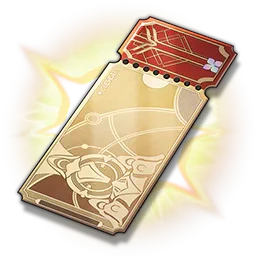
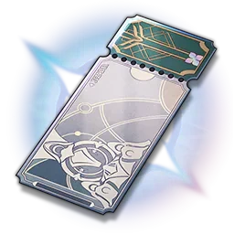
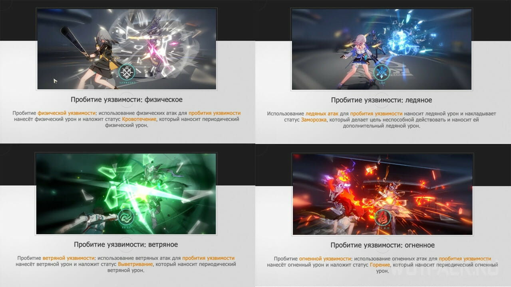
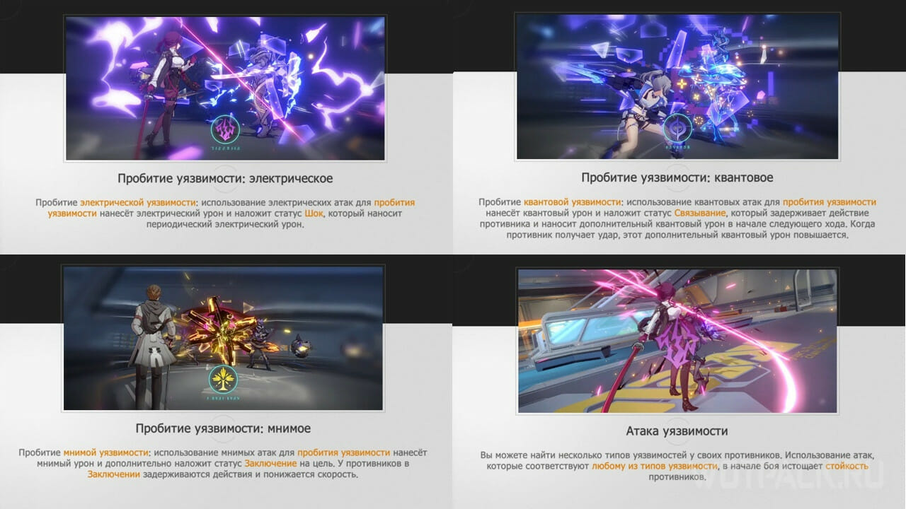

Honkai: Star Rail — это пошаговая ролевая игра, разработанная HoYoverse. Поднимитесь с нами на Звёздный экспресс, Первопроходцы!
В данной игре существуют 7 разных путей персонажей,
советую вам ознакомиться с ними в этом видеоролике!


В Honkai: Star Rail всего семь типов урона: физический, огненный, ледяной, электрический, ветряной, квантовый, мнимый.
У каждого персонажа есть свой тип урона, в соответствии с которым он наносит урон по врагам.
У противников есть уязвимость к определённому типу урона. Попадание атакой по врагу снижает его стойкость и вызывает пробитие уязвимости, которое увеличивает урон по цели и откладывает ход противника.
Каждый тип урона имеет свой переодический урон, например:
Кровотечение (физический) – наносит периодический физический урон.
Заморозка (ледянной) – наносит дополнительный урон льдом и заставляет пропустить один ход.
Выветривание(ветренный) – наносит периодический ветряной урон.
Горение (огненный) – наносит периодический огненный урон.
Шок (электрический) – наносит периодический электрический урон.
Связывание (квантовый) – наносит дополнительный квантовый урон, задерживает следующее действие противника, а также увеличивает урон по врагу после его атак.
Заключение (мнимый) – задерживает следующее действия противника и понижает его скорость.
 Всего существует 12 вспомогательных характеристик, включая процентные и плоские значения:
ㅤ• Сила атаки, аналогично.
ㅤ• HP - очки здоровья персонажа.
ㅤ• Защита - прочность персонажа.
ㅤ• Критический урон - множитель, на который умножается урон обычной атаки, если та стала критической.
ㅤ• Шанс критического попадания - шанс на множитель.
ㅤ• Скорость - повышение шанса персонажа ударить первым или ударить еще раз.
ㅤ• Шанс попадания эффектов - шанс наложения эффекта элемента.
ㅤ• Сопротивление эффектам - сопротивления персонажа,
ㅤкогда враг пытается навредить/захватить его.
ㅤ• Особый эффект пробития - пробитие срабатывает только в том
ㅤслучае, когда стойкость – белая шкала над полоской здоровья
ㅤвражеского существа, опустится до нуля. После этого на врага
ㅤбудет наложен эффект пробития, соответствующий типу атаки,
ㅤкоторой пробили стойкость.